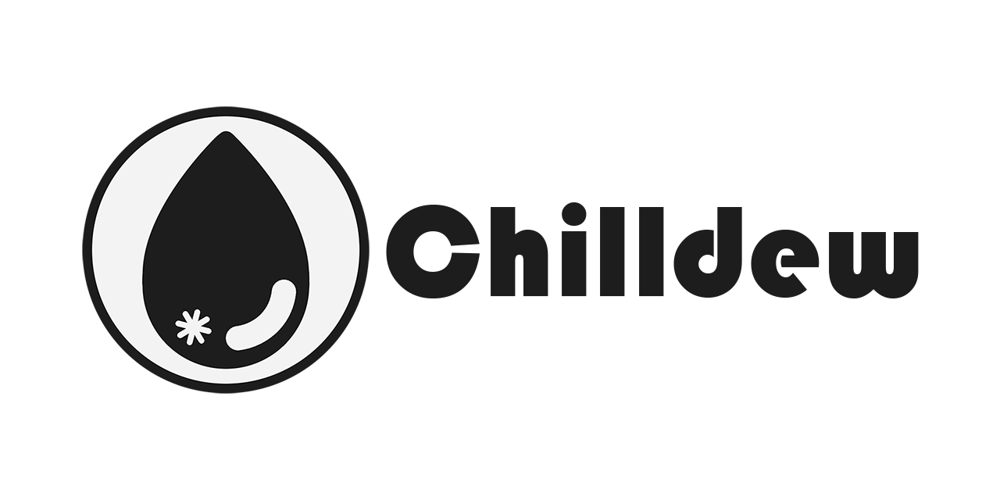

Here are my most recent and major projects that I had worked on and completed. I have write-ups written for each of them that you can check out under the drop list or as listed in the description.

EOS is the game made by my team, Bonsai Tavern, for our 3rd year Digipen project. I was part of the technical team and worked on the game engine. You can learn more about my contributions and what I've learnt from the project in my write-up here.

Dynamo is the game made by my team, Cognito (yes, I suggested that just so we could say we were incognito), for our 2nd year Digipen project. The project spanned two trimesters and I spent the first trimester as the Graphics Programmer before taking on the secondary role of a Technical UI Designer in the second trimester. You can learn more about my contributions in my write-up here.
You can check out some of my repositories at my GitHub profile.

The Chilldew project is a game engine and editor project that I'm currently working on. It is the cumulation of all the things I have learnt in my time at Digipen and the project I use to test any programming concepts that I am curious about, such as data oriented programming.
I'm currently also looking into Travis-CI as a start to continuous integration and deployment. I'm hoping to implement that into my Chilldew project once I have a better understanding on how to set it up. I'm currently using a forked project to better understand the tool.
EOS is the game made by my team, Bonsai Tavern, for our 3rd year Digipen project. I was part of the technical team and worked on the game engine. You can learn more about my contributions and what I've learnt from the project in my write-up here.
Dynamo is the game made by my team, Cognito (yes, I suggested that just so we could say we were incognito), for our 2nd year Digipen project. The project spanned two trimesters and I spent the first trimester as the Graphics Programmer before taking on the secondary role of a Technical UI Designer in the second trimester. You can learn more about my contributions in my write-up here.
UI/UX Design
DES260: User Experience Design
For one of my design electives, I took the User Experience module and from there learnt about the wireframes, the different levels of fidelity that they could have, mockups, and experienced what it's like to quickly iterate and prototypes for these layouts using Unity. You can learn and see my work in my write-up here.
Dynamo is the game made by my team, Cognito (yes, I suggested that just so we could say we were incognito), for our 2nd year Digipen project. The project spanned two trimesters and I spent the first trimester as the Graphics Programmer before taking on the secondary role of a Technical UI Designer in the second trimester. You can learn more about my contributions in my write-up here.
Game Design
Most of my design experience is derived from my respective design projects in class. I have the most experience with UI design and some experience with mechanics
Sound Design
- UI/UX Design for Games
- Gameplay Scripting with Unity
- Gameplay Scripting with Unreal Engine
- Dabbling in Shader Effects with Unreal Engine
- Sound Design for Short Films